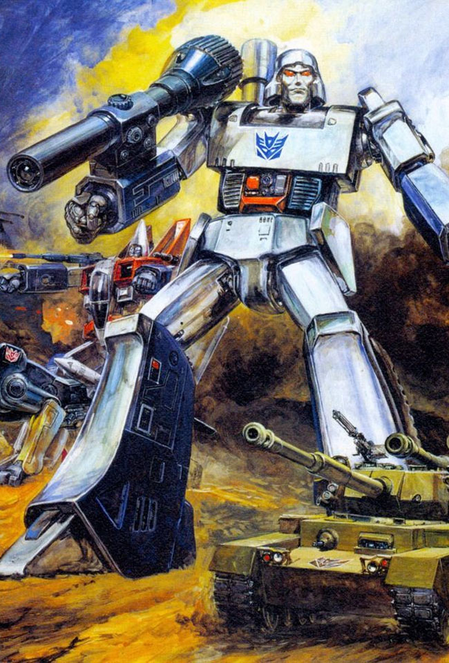
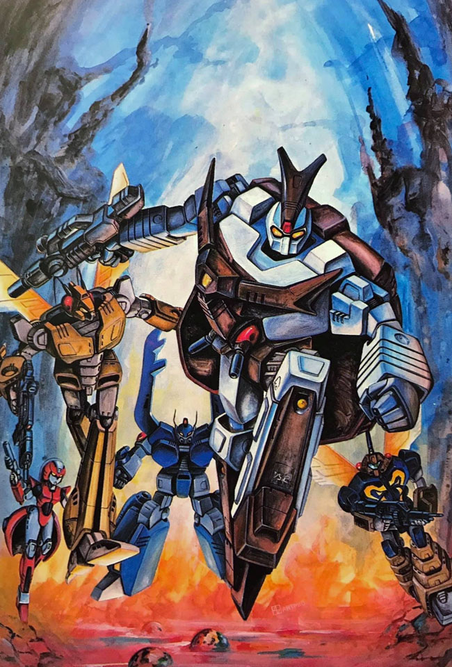
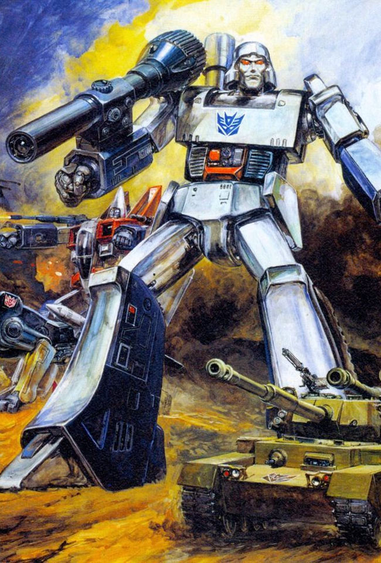
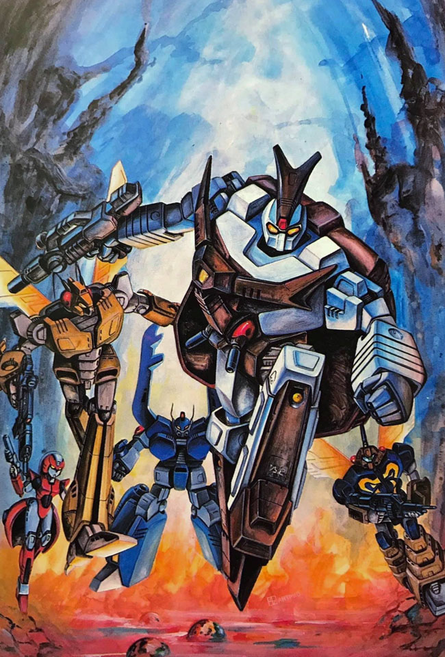

Sub-Chapter 23: Steel, Lace, and the Micronized Gaze
Location: SDF-1 Grand Ballroom — Sector 7
The air inside the SDF-1’s Grand Ballroom was thick with the scent of ozone and cheap industrial coolant. Optimus Prime stood at the curtain’s edge, his massive metallic brow furrowed as he watched the audience. Below him sat ten thousand micronized Zentradi men, row after row of battle-scarred warriors who had spent their entire lives knowing only the cold interior of a Regult cockpit. Now, they sat in velvet chairs, clutching program guides with trembling hands, their eyes wide with a mixture of terror and a burgeoning, dangerous curiosity.
"This is a mistake, Prowl," Optimus rumbled, his voice a low-frequency vibration that rattled the floorboards. "They are not ready for the 'Steamy Transformation' category. They barely understand the concept of a 'handshake,' let alone the aesthetic nuances of a Cybertronian chassis-shift."
But the showrunners—a conglomerate of UN Spacy bureaucrats and greedy talent agents—had already pushed the button. To bridge the gap between alien cultures, they had ignored the Autobot leader’s pleas for modesty. They wanted a spectacle. They wanted Cutey Honey.
Behind the curtain, the atmosphere was even more volatile. Arcee, the undisputed queen of the Cybertronian stage, was currently venting steam from her shoulder joints. She paced on her high-heeled stabilizers, her pink-and-white plating polished to a mirror finish. "An honorary Transformer?" Arcee hissed, glaring at the small, vibrant android woman adjusting her choker in the vanity mirror. "She doesn't even have a spark! She’s a glorified vending machine with a wig!"
Honey turned, her eyes sparkling with a mischievous, organic warmth. "Oh, Arcee-san, don't be so stiff! Transformation is an art of the heart. The Zentradi don't want to see gears and piston-fluid; they want to see magic."
"Magic doesn't win wars, Honey," Arcee retorted, her arm-cannons clicking into a standby mode. "But tonight, I'm going to show you that Cybertronian engineering is the only thing worth worshipping in this galaxy."
Sub-Chapter 24: The Flash and the Friction
The announcer’s voice boomed over the speakers: "And now, for the award you’ve all been waiting for... The Most Steamy Transformation!"
The stage erupted in a dual display of light. Arcee rolled out in a high-speed drift, transforming mid-air into her sleek robot mode with a cacophony of clicking metal. She landed in a perfect superhero three-point stance. The Zentradi men leaned forward, recognizing the military precision.
Then came the Honey Flash.
A localized supernova of pink light engulfed the center stage. Honey didn't just change; she flowed. To the Zentradi, who had only ever seen armor bolted onto frames, the sight of her shifting into her 'Biker Honey' leather catsuit—complete with the sound of a revving engine that seemed to purr—was too much. A collective groan of "Yak Deculture!" rose from the crowd like a tidal wave.
Arcee’s optical sensors turned a bright, furious red. "You want 'steamy'?" she muttered. She didn't just transform; she began a Recursive Hyper-Shift. Her limbs elongated, her torso split, and within seconds, she had become a multi-layered kinetic sculpture of pink chrome and glowing neon. She looked like a Valkyrie crossed with a luxury skyscraper, her internal heaters venting literal clouds of perfumed steam into the rafters.
Honey giggled, sensing the challenge. She leaped into the air, her Atmospheric Solidification System working at 120% capacity. She became a whirlwind of personas: a nurse, a flight attendant, a shimmering mermaid, and finally, a Warrior of Love clad in nothing but light and determination. The sheer 'allure' output was so high that the Zentradi audience began to experience minor telepathic feedback, seeing visions of a peaceful Earth they had never known.
Sub-Chapter 25: The Goddess of the SDF-1
The two females were now a blur of motion. Arcee, desperate to regain her status, attempted a forbidden "Triple-Mass-Shift," growing to thirty feet tall while Honey orbited her like a frantic, glowing sprite. The competition had reached a fever pitch where the boundary between mechanical physics and magical girl logic began to dissolve.
"Look at me!" Arcee commanded, her voice amplified through the ship's internal comms. "I am the pinnacle of Cybertronian grace!"
"But Arcee," Honey shouted, diving toward the Autobot’s chest plate. "You're missing the final ingredient! You need to feel the love!"
In a moment that would be debated by historians for decades, Honey didn't bounce off Arcee’s armor. She merged with it. The nanotechnology of Earth met the living metal of Cybertron. The result was a Goddess-Class Metamorphosis. The ballroom was filled with a warm, golden radiance. Standing where the two rivals had been was a singular entity: a towering, translucent statue of a woman holding a sword of pure spark-energy.
The Zentradi audience fell silent. For the first time in their lives, they weren't thinking about war. They weren't thinking about the Zentradi code. They were experiencing Love—and it felt like a system crash.
The moment was shattered. A cloud of pink glitter-smoke and heavy-metal sparks erupted from the wings. The "Goddess" statue flickered and separated, Arcee and Honey tumbling to the floor in a heap of tangled limbs and cooling metal.
Sub-Chapter 26: The Red Suits and the Oni Princess
Through the smoke marched a nightmare in red plastic and steel. A squad of Meltrandi terrorists—giant, fierce women who had refused to micronize—stormed the stage. But they weren't wearing their standard power armor. They were encased in B-Ko’s experimental power suits, their massive, boxy shoulders and rocket-propelled boots giving them the silhouette of a high-tech demolition crew.
At their center stood B-Ko herself, adjusting her glasses with a smug, villainous grin. "Pathetic!" she barked, her voice echoing through the hall. "You call these transformations? You're playing with toys while I’ve perfected the art of the Crushing Blow!"
The Meltrandi Commander beside her raised a spear. "Zentradi brothers! You have been blinded by these weaklings! We have found a new path. We have found a leader who understands the true power of the storm!"
B-Ko stepped forward, clicking a remote. A massive holographic banner unfurled behind her, showing a green-haired girl in a tiger-stripe bikini, laughing as lightning crackled around her.
"By the authority of the Empire of Oniboshi and the genius of B-Ko Industries, this ship is now under the protection of Lum Invader! From this moment forward, the SDF-1 is no longer a refugee camp—it is a training ground for the Oni Star! Anyone who resists will be subjected to mandatory electric-shock therapy!"
Optimus Prime tried to stand, his joints locked by a localized EMP-field secretly installed in the stage floor by B-Ko’s drones. "You cannot... do this," he groaned.
"Watch me, Big Red," B-Ko laughed, leaning against a Meltrandi’s massive armored thigh. "And tell that 'Warrior of Love' to find a new outfit. This year, tiger-stripes are the only thing in fashion."
The Fallout: A New Regime
The occupation was swift. Within hours, the SDF-1’s mess halls were serving spicy pickled plums and the library was stocked exclusively with "How to Catch a Darling" manuals. The Zentradi, confused by the shift from 'Honey-Love' to 'Oni-Violence,' simply followed the loudest voice. As for Arcee and Honey? They were seen being led away to B-Ko’s laboratory—rumor has it, B-Ko wants to see if she can build a power suit that can transform into a wedding cake.